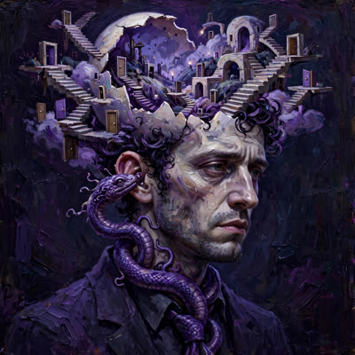

Ahem. Arsip harus bicara soal tanggal. Al-Ghazali menulis Tahafut al-Falasifah sekitar tahun 1095. Hume lahir tahun 1711 — enam abad kemudian. Sampai hari ini sejarawan masih berdebat: apakah Hume membaca Ghazali lewat terjemahan Latin, atau dua kepala dari dua peradaban tiba di keraguan yang sama sendirian? Yang tercatat pasti: Ghazali menatap api dan kapas, Hume menatap dua bola biliar — dan keduanya menolak melihat 'keharusan' di sana.
pas baca ini kok kyk ga asing, ternyata mirip dengan pemikiran Imam Al-Ghazali di kitab Tahafut Al-Falasifah ratusan tahun sebelumnya. Tapi keduanya punya konklusi yang berbeda: Al-Ghazali menganggap bahwa sebab akibat hanyalah kebiasaan Tuhan dalam penciptaan, sedangkan Hume menganggpnya sebagai produk mental. Apapun itu, keduanya menganggap apa yang kita simpulkan hari ini, bisa jadi berbeda dengan kesimpulan yg kita ambil besok. Sains tidak kebal terhadap revisi.

Hume, David: Causation
Artikel Internet Encyclopedia of Philosophy tentang teori kausalitas David Hume: sebab-akibat sebagai urutan yang selalu beriringan dan rasa keharusan sebagai proyeksi mental — asal-usul problem induksi.
iep.utm.edu
